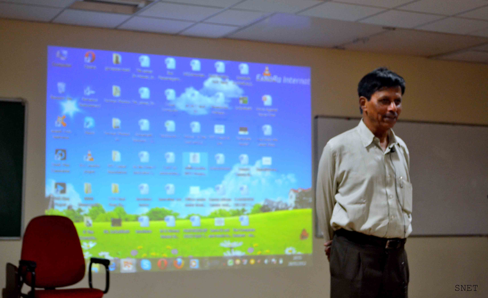
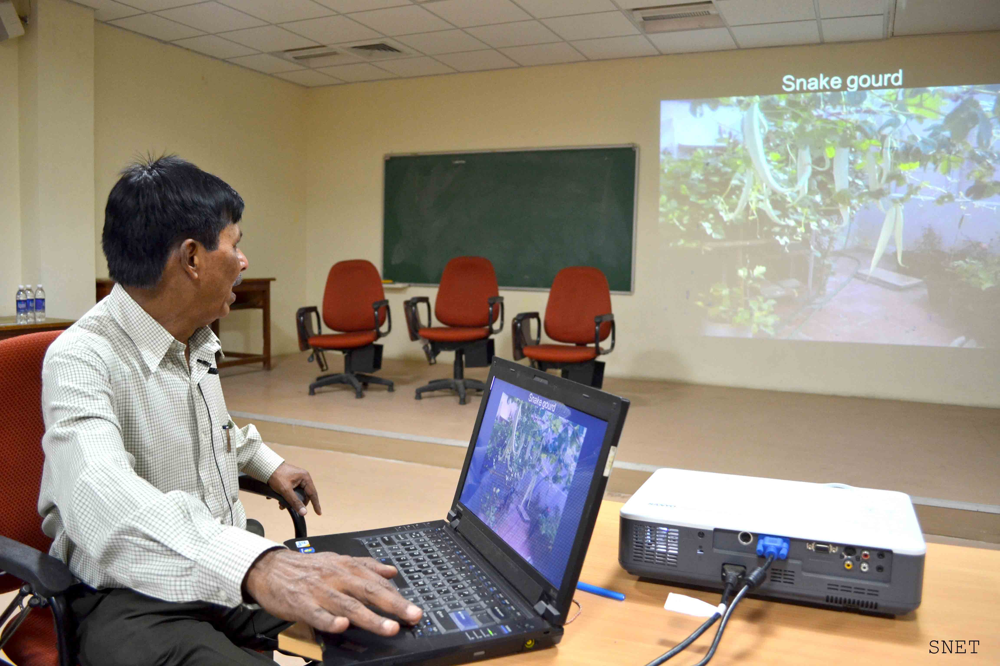

SUSTAINNOVATION
Overview
 When he entered the hall everyone felt excitement brewing in them as he is quite well known for his witty and mind blowing elocution skills. He was none other than Mr M.B.Nirmal popularly known for heading Exnora which is most popular one among the many non-governmental organizations, dedicated for social and environmental causes, that he holds.
His talk was about “Sustainnovation”. As is evident from the title, it was about innovation in the field of sustainability to counter today’s consumerist society which leads to inequality in terms of the environmental balance as well as the economic divide in the world. This has lead to a harmful and unsustainable lifestyle for the world as a whole.
He started off with the different types of warming including soil, water and wind warming. Soil warming causes agricultural produce to drop down drastically which in turn will lead to excessive use of fertilizers harming the environment even more. Water warming leads to loss of a variety of species in the oceans causing imbalance in the food chain. Wind warming causes change in rainfall pattern causing uncharacteristic droughts and floods in all parts of the world.
He then talked about the initiatives he had taken in Exnora like the BORDA-DEWATS project. This project’s aim was to establish a community based sanitation facility having capacity for 30 persons. Biogas is produced using the wastewater coming out of this toilet complex and is used to produce electricity to power the lights in the toilets as well as for cooking nearby. This aim was achieved successfully.
He has also set up a terrace garden in his home of which he is able to get valuable fruits and vegetables which he would have otherwise bought. One of his mind boggling innovations was in using a foldable lawn in the roof top which worked as good as a normal lawn. He also has filled every nook and cranny in his home with plants using a variety of innovative methods. Some of his plants especially the Bhemma Bamboo is known to be an excellent carbon sink and also keeps away snakes from the house. Due to such remarkable measures taken by him, the house is being regularly visited by many people of high repute from foreign countries as well as India.
He emphasized that simplicity is a must for a sustainable living. For eg in his home, instead of buying state of the art water purifiers, he uses copper pot which is known to reduce bacteria growth in water.
Apart from the above direct measures to protect environment, he also talked about the importance of the role of governments ensuring sustainable living in a state or a country. So, it is vital to reduce corruption in that sense. It is for this purpose that Mr Nirmal also started NGO “5th Pillar” which conducts sting operations, spreads awareness about RTI and so on.
To sum it up, it was a lecture which covered a lot of interlinked aspects involved in ensuring a sustainable world and left us with an enlightened mind.

Recent
Patrons